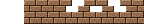

chipdata - マップチップ情報
マップチップとは、マップを構成する単位です。
各マップチップには番号が振られており、マップソースではこの番号の並びを指示します。
このマップチップとマップソースから得られる情報を組み合わせることで、マップが完成します。
それぞれのチップにはhardness(硬さ)が設定されており、これが0だと自機との衝突判定無し、1以上で衝突判定有りになります。自機のHPは
<新しいHP> = <今までのHP> - <衝突チップのhardness>
で計算されます。
マップチップ情報では、マップチップに使用する色・画像と硬さを指定できます。
width, height
1チップあたりの横幅と縦幅をピクセルで指定します。
チップの大きさはデフォルトでは16px×16pxです。
あまり小さなサイズにするとマップの描画が重くなるので注意が必要です。
type・name
種類・名前には以下のいずれかを指定します。
いずれにおいても、0番のチップはマップ上で描画されず、背景がそのまま見えます。
| type | name | 説明 |
|---|---|---|
| Builtin | Binary | 0番(背景)と1番(前景)の2つのチップから成るマップチップ。 背景は無色、前景は色情報で指定した前景色になる。 硬さは0番が0(衝突判定無し)、1番が1(衝突判定有り) |
| Colors | チップの色と硬さを指定するマップチップ。何個でも使用できる。 ただし0番の色は無視され、無色になる。 |
|
| Image | マップチップの 画像ファイル名 |
チップの画像と硬さを指定するマップ。 ただし0番の画像は無視され、無色になる。 |
chip
チップの種類がColorsかImageの場合に、チップ数分だけ記述します。
type=Builtin, name=Colorsの場合
各チップのcolor(色)とhardness(硬さ)を必要数記述します。
XML中でのchipの順番がマップチップの順番と一致します。すなわち、最初に記述したchip要素が0番目のチップ、次に記述したchip要素が1番目のチップ、…となります。
※ chipの記述が無い場合、0番の色は無色、硬さは0、1番の色は黒、硬さは1の2つからなるマップチップとなります。
type=Imageの場合
各チップのhardness(硬さ)を必要数記述します。
XML中でのchipの順番がマップチップの順番と一致します。すなわち、最初に記述したchip要素が0番目のチップ、次に記述したchip要素が1番目のチップ、…となります。
※ chipの記述が無い場合、0番の硬さは0、それ以外のチップの硬さは1となります。
Sample
Binary
大きさ10px×10pxの2つのチップから成るマップチップ。
色は<color>で指定されたもの。
チップの硬さは0番(背景)は0、1番(前景)は1で固定。
<chipdata width="10" height="10">
<type>Builtin</type>
<name>Binary</name>
</chipdata>
結果(color要素でbackground=White, foreground=Blackとした場合)
| チップ番号 | 0 | 1 |
|---|---|---|
| 色 |  無色 |
 前景色 |
| 硬さ | 0 | 1 |
Colors
色と硬さを指定した16px×16pxの3つのチップから成るマップチップ。硬さは0番が0、1番が1、2番が2。
<chipdata width="16" height="16">
<type>Builtin</type>
<name>Colors</name>
<chip> <!-- 0番目のチップ --> </chip>
<chip> <!-- 1番目のチップ -->
<color>#00cccc</color>
<hardness>1</hardness>
</chip>
<chip> <!-- 2番目のチップ -->
<color>#0000cc</color>
<hardness>2</hardness>
</chip>
</chipdata>
結果
| チップ番号 | 0 | 1 | 2 |
|---|---|---|---|
| 色 | 無色 |
 #00cccc |
#0000cc |
| 硬さ | 0 | 1 | 2 |
Image
画像を指定したサイズ24px×24pxで区切ったタイルをチップとするマップチップ。
画像ファイル(mapchip.png): 
<chipdata width="24" height="24">
<type>Image</type>
<name>mapchip.png</name>
<chip />
<chip><hardness>2</hardness></chip>
<chip><hardness>2</hardness></chip>
<chip><hardness>1</hardness></chip>
<chip><hardness>1</hardness></chip>
<chip><hardness>2</hardness></chip>
</chipdata>
結果
| チップ番号 | 0 | 1 | 2 | 3 | 4 | 5 |
|---|---|---|---|---|---|---|
| 画像 |  |
 |
 |
 |
 |
 |
| 硬さ | 0 | 2 | 2 | 1 | 1 | 2 |